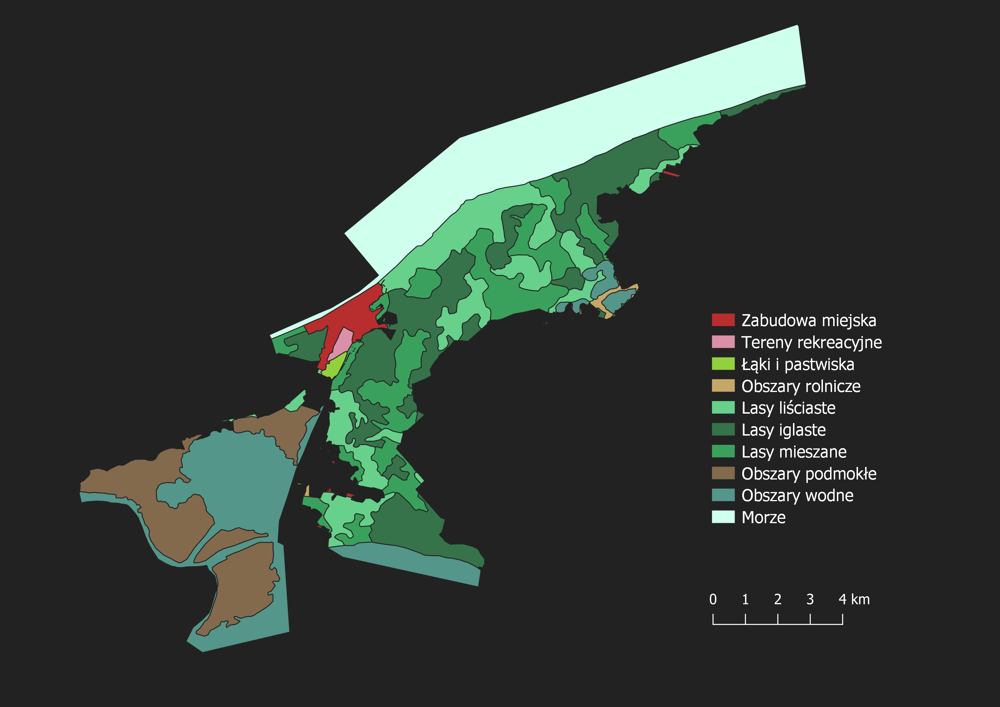

Poniższa publikacja jest efektem końcowym projektu naukowego realizowanego w ramach wyjazdu na Obóz Naukowy w Białej Górze przez Sekcję Geoinformacji Studenckiego Koła Naukowego na Uniwersytecie im. Adama Mickiewicza w Poznaniu. Celem projektu była statystyczna ocena korelacji znormalizowanego różnicowego wskaźnika wegetacji oraz temperatury gruntu z pokryciem terenu dla Wolińskiego Parku Narodowego i miasta Międzyzdroje.
Woliński Park Narodowy znajduje się w województwie zachodniopomorskim, na największej polskiej wyspie - Wolinie. Jest jednym z najchętniej odwiedzanych atrakcji turystycznych w kraju - w roku 2015 pod tym względem plasował się na 8. miejscu, z liczbą odwiedzających dochodzącą do 1,5 mln osób. Park charakteryzuje się wielką różnorodnością pokrycia terenu, w tym głównie lasów, które zajmują niemal 45 procent powierzchnii z ok. 110 km². Granicząc z Międzyzdrojami - małym, stricte turystycznym miasteczkiem, zajmującym 4,5 km², daje to dość kontrastowy pod względem potencjalnych różnic temperatury wielki pas zieleni.
Analiza wykorzystująca wskaźnik NDVI i temperaturę gruntu została przeprowadzona w oparciu o zbrazowanie satelitarne z programu Landsat 8, prowadzonego przez dwie amerykańskie instytucje: Narodową Agencję Aeronautyki i Przestrzeni Kosmicznej (NASA) i Służbę Geologiczną Stanów Zjednoczonych (USGS). Jednym z głównych źródeł danych były warstwy wektorowe dotyczące pokrycia terenu z projektu CORINE Land Cover CLC2018, realizowanego w ramach programu Copernicus Land Monitoring, będącego częścią ogólnego projektu Copernicus. W projekcie wykorzystano również darmowe, ogólnodostępne dane, pochodzące z OpenStreetMap - były to wyłącznie granice administracyjne miasta Międzyzdroje oraz Wolińskiego Parku Narodowego.
Zobrazowanie satelitarne pozyskano na dzień 24 czerwca 2022 roku - wówczas na badanym obszarze występowała temperatura powietrza 27°C. Wartości NDVI oraz temperatury gruntu zostały pozyskane na podstawie szeregu obliczeń wykorzystujących poszczególne kanały spektralne - czerwony, bliskiej podczerwieni, a także termalny. Obliczenie temperatury gruntu wymagało wyszczególnienia promieniowania widmowego górnej atmosfery, temperatury promieniowania, emisyjności powierzchnii ziemi, a także znormalizowanego różnicowego wskaźnika wegetacji NDVI.
